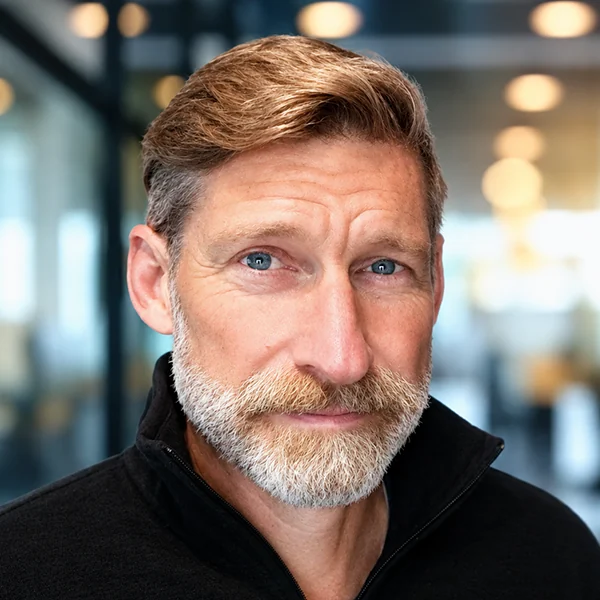
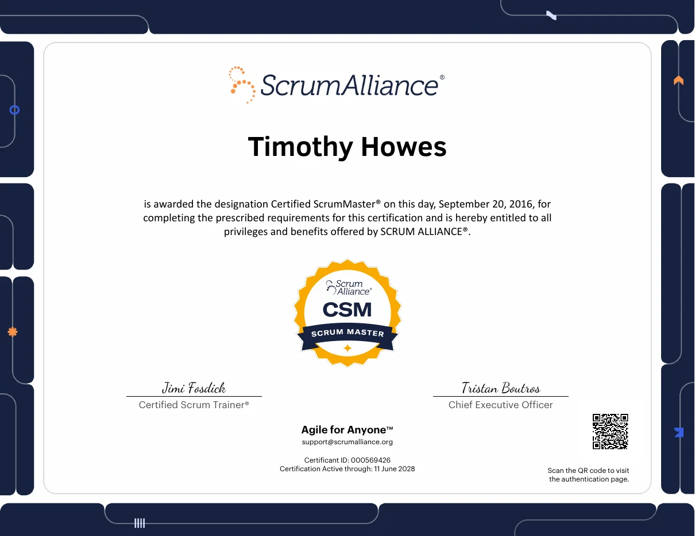
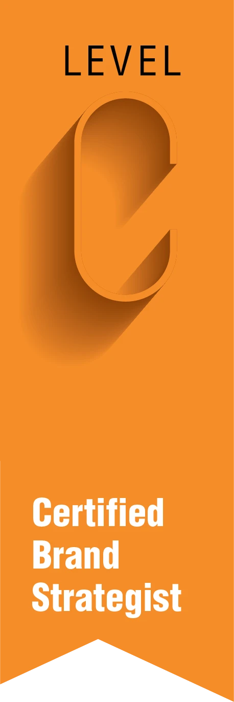

About
Hi, I’m Tim.
I was born in California and I’m still a beach kid at heart. Early surf brands and 1970s board decals are where the sunset on this site comes from.
For 25 years I’ve ridden each new wave of technology: interactive multimedia, web, mobile, real-time 3D, XR and now generative AI. Each time, the job is the same: make the new thing useful, on brand, and something a real team can ship.
I’m a Certified Brand Strategist and a Certified Scrum Master. I care as much about why we’re making something as how quickly we can get it in front of people. I lead from the work, not from a distance.
Today I live on a small farm in Hungary with my family and work US hours with American teams, as I have for more than five years. Off the clock, you’ll find me with a 360 camera, digging into history, or explaining the difference between a backlog and a to-do list.
- Based
- Hungary, working US hours
- Experience
- 25 years
- Education
- B.A., Art and Graphic Design, Virginia Tech
- Certifications
- Certified Brand Strategist (Level C) · Certified Scrum Master (CSM)
- Language
- English, native
Certifications


How I lead
I’ve led creative and delivery teams at startups, an agency and Oracle, in the same room and across three continents. I keep teams small, close to the work and shipping often.
- Unified two globally distributed Oracle Scrum teams, every member in a different location, into one cohesive unit within 3 months.
- Designed and delivered Agile training for 50–100 participants at a time at Oracle, from developers to senior directors.
- Led Waterfall-to-Agile transformations for SkyLine-Computer in Hungary (in 4 months) and Brand Emotion in Romania.
- Introduced Scrum at The Scylla Group, where it is still the operating model, and run Ruscella Immersive on it today.
- Lead cross-functional teams of 5–7: mentoring, 1:1s, hiring, and presenting to clients and executives.
- Brought in 20% of annual agency revenue through new clients including McAfee, Danone, Ironmark and Absolute Software.
Where I’ve worked
- Chief Creative Officer and Co-FounderRuscella Immersive2024–present
- Director of Brand and Product DesignAccessVR (now OrchestrateXR)2022–2023
- Scrum MasterOracle2020–2022
- Independent Agile and Scrum CoachHungary and Romania2019–2020
- Creative Director and UX DesignerThe Scylla Group2011–2019
- Creative Director and Senior Multimedia DeveloperMedia Box Studios2005–2011
Tools I use
Adobe Creative Cloud, DaVinci Resolve, Blender, Cinema 4D, Unity, Figma, Claude, Higgsfield, Leonardo, Nano Banana, Tripo, JIRA